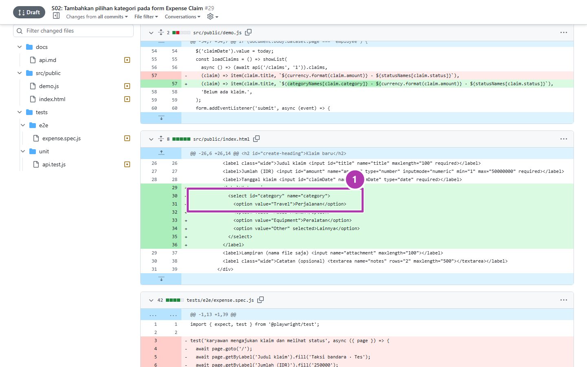
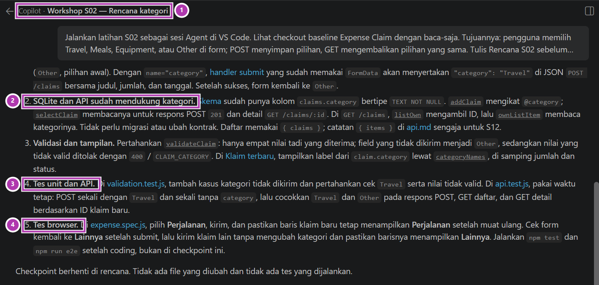
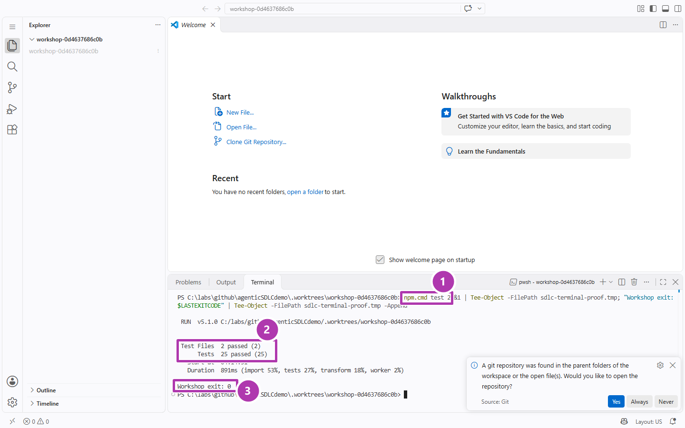
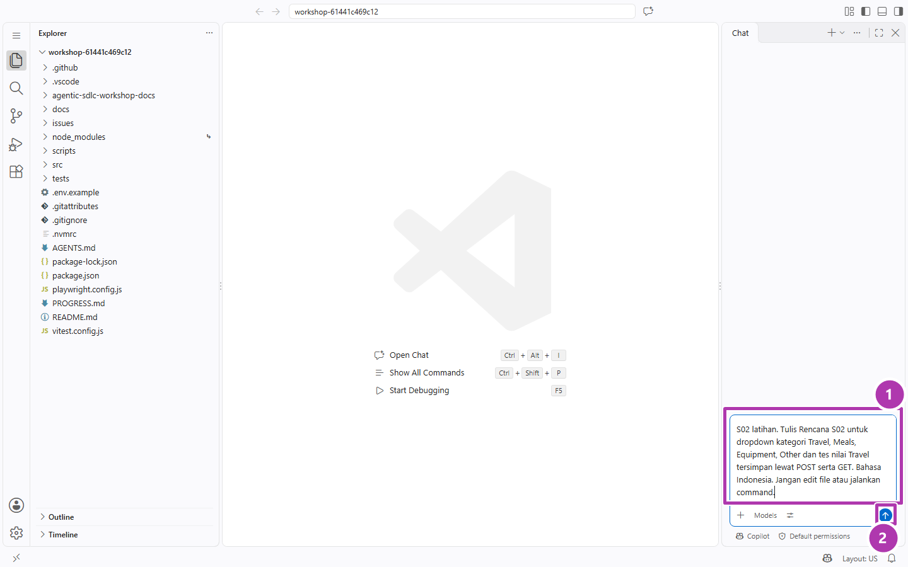
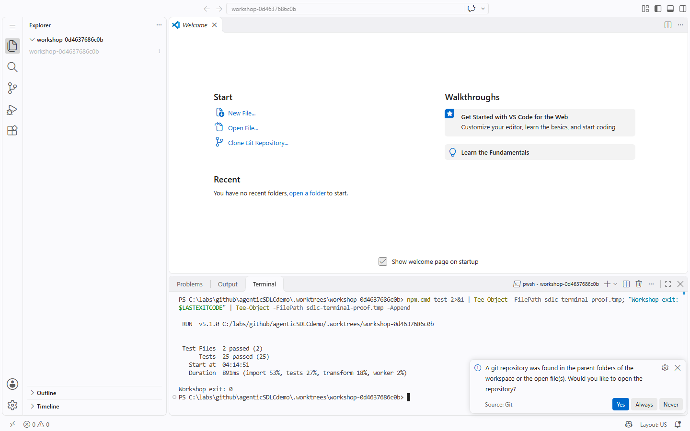
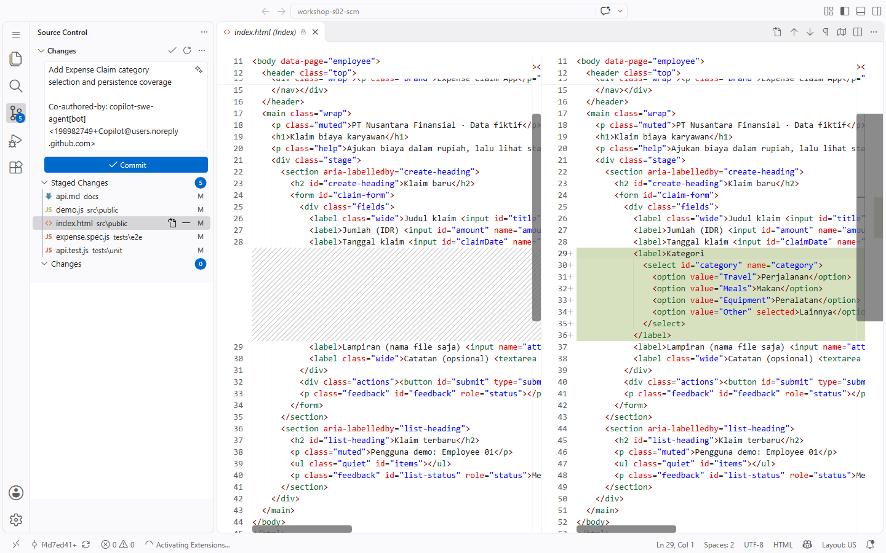
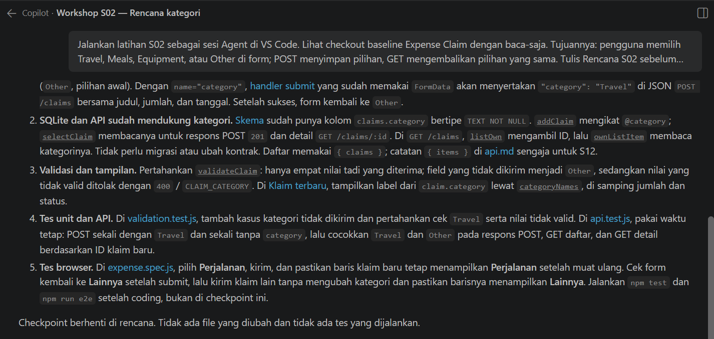
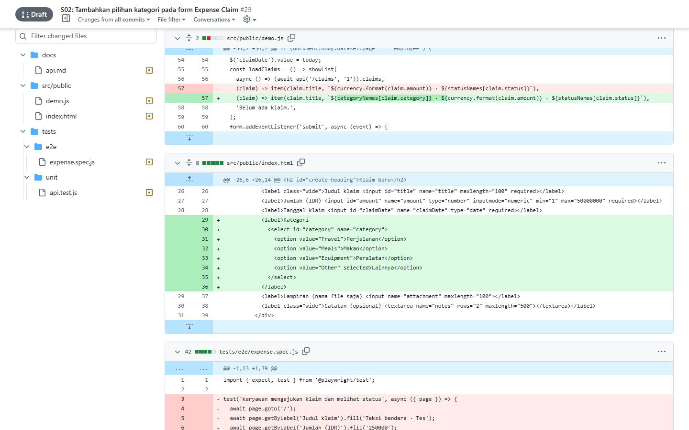

S02 · Level 1 — Inner loop
Ubah fitur di beberapa file
Agent Mode usulkan perubahan lintas file. Bima cek rencana dan bukti sebelum meninjau diff.
Status latihan: Rencana Agent terekam di VS Code Desktop; Source Control 5 file dan 25 tes unit draft #29 terverifikasi terpisah. Ikuti langkah · Cek hasil · Langkah live · Ulangi dari awal.
Masalah yang dihadapi
Pilihan kategori terlihat kecil, tetapi menyentuh form, payload, penyimpanan, dan tes.
Kerugian: Satu bagian yang terlewat baru terlihat saat QA.
Masalah pada baseline
src/public/index.html
Lihat potongan atau catatan sumber
Baseline: form tidak menampilkan kategori; API memberi default Other.Solusi dan alur
Agent Mode usulkan perubahan lintas file. Bima cek rencana dan bukti sebelum meninjau diff.
Alur kerja ringkas
Employee · Pilih Perjalanan
Hasil: Pilihan Travel masuk ke form klaim.
Browser dan API · Kirim, validasi, dan simpan
Hasil: POST /claims mengirim category; SQLite menyimpan nilai yang sudah didukung skema.
Developer · Baca ulang klaim
Hasil: GET detail menghasilkan Travel. Tes UI memastikan dropdown tidak sekadar berubah di layar.
- Buka dua versi formulir. Jalankan perbandingan. Buka 127.0.0.1:3000 (tanpa kategori) dan 127.0.0.1:3001 (ada kategori). Isi judul Taksi pilihan kategori, jumlah 250000, tanggal hari ini.
- Pilih Kategori → Perjalanan. Di versi :3001, nomor 1 menunjuk dropdown. Pilih Perjalanan (nilai Travel) dan klik Submit. Di baseline, klik Submit tanpa dropdown: POST menyimpan Other. Keduanya HTTP 201; GET /claims/:id membuktikan pilihan tersimpan.
- Coba Agent Mode di checkout terpisah. Klik ikon Chat → Agent. Lihat rencana, buka Source Control, lalu periksa Terminal saat tes lulus. Sistem penyimpanan sudah menerima category pada baseline; jangan menambah migration tanpa memeriksa skema. Gambar versi bersih bukan hasil sesi Copilot.
- Coba draft yang benar-benar dibuat Copilot. Buka draft #29 dan bandingkan form, payload, kontrak dan tes. Setelah checkout ref yang ditinjau, pilih Perjalanan, lalu cek respons lewat tes jaringan. Tidak perlu migrasi karena penyimpanan category sudah ada.
- Baca rencana asli di VS Code Desktop. Di VS Code Desktop, kirim prompt pada checkout v0-baseline. Baca rencana sebelum mengedit: kolom category sudah ada, jadi tidak perlu migrasi. Kotak 1–4 menunjukkan judul sesi, keputusan skema, tes unit/API, dan tes browser. Foto ini bukan hasil implementasi.
- Baca Source Control dan diff dropdown. Buka Source Control pada clone latihan yang terverifikasi. Jika clone sendiri masih Restricted Mode, periksa asalnya terlebih dahulu dan percayai hanya folder latihan itu, bukan folder induk. Pilih index.html pada Staged Changes lalu cocokkan pilihan kategori dan file payload/tes. Pada foto, path lokal disamarkan.
- Jalankan tes di terminal VS Code. Buka terminal pada snapshot draft #29, commit 0d46376. Jalankan tes unit. Pada gambar, npm.cmd test dipakai di PowerShell agar launcher Windows jelas. Untuk UI, lakukan tes browser secara terpisah.
Langkah demo
Buka dua versi formulir
Jalankan perbandingan. Buka 127.0.0.1:3000 (tanpa kategori) dan 127.0.0.1:3001 (ada kategori). Isi judul Taksi pilihan kategori, jumlah 250000, tanggal hari ini.
npm run demo:compare -- v1-app-clean Perbesar S02-before.png
Perbesar S02-before.pngv0-baseline · Form baseline terisi, tanpa field Kategori. Pilih Kategori → Perjalanan
Di versi :3001, nomor 1 menunjuk dropdown. Pilih Perjalanan (nilai Travel) dan klik Submit. Di baseline, klik Submit tanpa dropdown: POST menyimpan Other. Keduanya HTTP 201; GET /claims/:id membuktikan pilihan tersimpan.
npm run shots -- S02 Perbesar S02-after-annotated.png
Perbesar S02-after-annotated.pngv1-app-clean · dianotasi · Nomor 1 menandai pilihan Kategori (Perjalanan). Coba Agent Mode di checkout terpisah
Klik ikon Chat → Agent. Lihat rencana, buka Source Control, lalu periksa Terminal saat tes lulus. Sistem penyimpanan sudah menerima category pada baseline; jangan menambah migration tanpa memeriksa skema. Gambar versi bersih bukan hasil sesi Copilot.
Tambahkan pilihan Travel, Meals, Equipment, Other pada form klaim. Periksa skema, payload, tampilan daftar, dan tes; jalankan npm test. Perbesar S02-local-result.png
Perbesar S02-local-result.pngOutput lokal yang dirender · bukan layar portal · Output pemeriksaan lokal S02: v0-baseline; v1-app-clean. Coba draft yang benar-benar dibuat Copilot
Buka draft #29 dan bandingkan form, payload, kontrak dan tes. Setelah checkout ref yang ditinjau, pilih Perjalanan, lalu cek respons lewat tes jaringan. Tidak perlu migrasi karena penyimpanan category sudah ada.
git fetch origin copilot/add-category-selection-local-expense-claim npm run demo:compare -- 0d4637686c0b6fc95eef5c541eb2ac4190b46caa
Perbesar S02-draft-files-annotated.pngSumber GitHub · 1. Baca name=category dan opsi Travel. Cek demo.js meneruskan pilihan; draft tidak menambah skema baru. Baca rencana asli di VS Code Desktop
Di VS Code Desktop, kirim prompt pada checkout v0-baseline. Baca rencana sebelum mengedit: kolom category sudah ada, jadi tidak perlu migrasi. Kotak 1–4 menunjukkan judul sesi, keputusan skema, tes unit/API, dan tes browser. Foto ini bukan hasil implementasi.
Tulis Rencana S02 untuk dropdown kategori Travel, Meals, Equipment, Other dan tes nilai Travel melalui POST serta GET. Jangan edit file sebelum rencana diperiksa.
Perbesar S02-01-agent-plan-annotated.pngPotongan screenshot nyata VS Code Desktop · rencana Agent S02 pada v0-baseline · 1. Baca judul sesi Workshop S02; bagian bawah menunjukkan jawaban Agent, bukan hanya input. · 2. SQLite dan API sudah menyimpan category; rencana tidak menambah migrasi. · 3. Tes unit dan API akan membandingkan Travel dan default Other. · 4. Tes browser akan memeriksa label setelah reload. Sesi ini berhenti di rencana; belum ada file atau tes yang dijalankan. Baca Source Control dan diff dropdown
Buka Source Control pada clone latihan yang terverifikasi. Jika clone sendiri masih Restricted Mode, periksa asalnya terlebih dahulu dan percayai hanya folder latihan itu, bukan folder induk. Pilih index.html pada Staged Changes lalu cocokkan pilihan kategori dan file payload/tes. Pada foto, path lokal disamarkan.
git diff --cached --stat Perbesar S02-02-files-changed-annotated.png
Perbesar S02-02-files-changed-annotated.pngScreenshot nyata VS Code Web · clone lokal terisolasi, isi staging cocok dengan commit 0d46376 · 1. Baca lima Staged Changes: kontrak, form, payload, tes API dan e2e. Klik index.html untuk melihat diff. · 2. Di sebelah kanan, dropdown menambah Travel (Perjalanan), Meals, Equipment, dan Other. Ini perubahan actual draft #29 yang disiapkan ulang di clone lokal, bukan sesi native Agent yang membuat kode. Jalankan tes di terminal VS Code
Buka terminal pada snapshot draft #29, commit 0d46376. Jalankan tes unit. Pada gambar, npm.cmd test dipakai di PowerShell agar launcher Windows jelas. Untuk UI, lakukan tes browser secara terpisah.
npm test npm run e2e -- expense.spec.js
Perbesar S02-03-tests-green-annotated.pngTerminal PowerShell nyata di VS Code Web · draft #29 commit 0d46376 · 1. Jalankan npm test dari checkout yang benar. · 2. Baca Test Files 2 dan Tests 25 passed. · 3. Exit 0 menandakan tes unit selesai; ini bukan GitHub CI, dan tes browser diuji terpisah.


Cek hasil
Pada snapshot #29, pilihan Perjalanan tersimpan: POST 201 dan GET 200 mengembalikan Travel. Tanpa dropdown, baseline menyimpan Other. Terminal VS Code pada 0d46376 mencatat 25 tes unit lulus; 4 tes browser lulus terpisah. Tangkapan rencana dari sesi baca-saja pada v0-baseline menjelaskan kenapa migrasi tidak perlu.
Bukti latihan terverifikasi
Langkah live
Prasyarat dan petunjuk pengambilan bukti
Untuk mengulang, minta Agent menulis rencana di checkout latihan terpisah. Bukti rencana dari v0-baseline berbeda dengan bukti file dan tes pada draft #29. Cek commit masing-masing sebelum menyimpulkan bahwa kode atau tes sudah berjalan.
Tidak ada target bukti live yang belum direkam.
Sebelum dan sesudah
Geser pembanding atau gunakan tombol panah pada kontrol. Kedua gambar bisa dibuka terpisah.
| Bagian | Sebelum | Sesudah / target |
|---|---|---|
| Perilaku | Form tidak punya kategori; POST menyimpan Other. | App bersih: pilih Perjalanan, lalu POST dan GET detail mengembalikan Travel. |
| Bukti visual | Ada tangkapan lokal. | Ada tangkapan lokal. |
| Keputusan | Peserta membaca keadaan awal. | Manusia memeriksa hasil sebelum meneruskan. |
Manfaat
- Bima bisa melihat apakah perubahan dari UI sampai tes lengkap.
Bukti dan sumber
Template issue S02 · Data latihan dan pengukuran.
 Perbesar S02-after.png
Perbesar S02-after.png Perbesar S02-draft-app.png
Perbesar S02-draft-app.png Perbesar S02-draft-app-annotated.png
Perbesar S02-draft-app-annotated.png Perbesar S02-vscode-agent-entry.png
Perbesar S02-vscode-agent-entry.png

Perbesar S02-vscode-agent-entry-annotated.png

Perbesar S02-03-tests-green.png

Perbesar S02-02-files-changed.png

Perbesar S02-01-agent-plan.pngBukti GitHub live
Draft #29 benar-benar mengubah form, payload, kontrak, dan tes. Skema lama sudah dapat menyimpan kategori.


Perbesar S02-draft-files.pngUlangi latihan
Berhenti dari terminal server dengan Ctrl+C; jalankan npm run demo:before lagi. Data demo kembali ke seed; tidak ada perubahan ke GitHub.
npm run reset
npm run demo:before